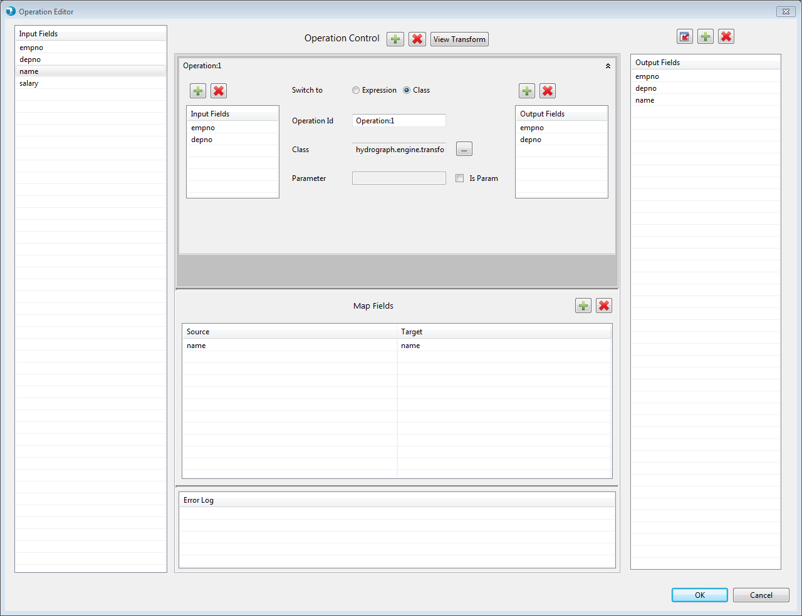
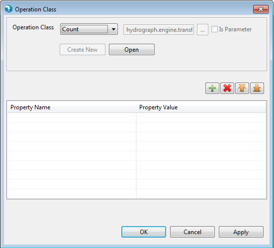

Cumulate Operation Editor
Operation editor for the Cumulate component can be viewed by clicking the Edit button next to Cumulate property on General tab.
Input fields arriving from the input port are available in the Input Fields Grid on the left.
The 'Operation Control' allows users to add multiple cumulate operations. Each operation is displayed in the window below 'Operation Control'. Each operation has input fields and output fields.
Map Fields table in the bottom section allows user to specify pass-through and map fields.
The output fields grid on the right contains the operation output fields of all the operations as well pass-through and map fields.

Fig 1
The input fields grid list all the fields available on the input port of the cumulate component. This list is populated automatically based on the component connected to the input port of the cumulate component. If no component is connected to the input port of the cumulate component, this list is empty.
The operation window defines one cumulate operation. Adding an operation is not mandatory. The output can just comprise of map or pass-through fields. The cumulate operation has following fields (mandatory fields are underlined):

Fig 2
User can drag and drop single or multiple fields in the mapping grid. Alternatively, user can also use the 'add', 'delete' buttons above the map fields grid to add or delete fields manually. The fields that are passed as-is in the output are pass-through fields. Whereas, fields renamed in the output are map fields.
Adding map fields or pass-through fields is not mandatory. The output can just contain operation output fields.
Checking the Passthrough input field checkbox will drag all the input fields in the Map Field Grid and in Output Fields.
The output fields grid contains the operation output fields of all the operations as well pass-through and map fields. The operation output fields, pass-through fields and map fields are automatically added in the output fields grid.
Adding at least one output field is mandatory. The output filed can come from either an operation or as a map or pass-through field.
The add and delete button on the top of this grid allow adding / deleting the parameter values in output fields grid.
User can also opt to pull the schema from the schema tab (i.e. the out port of cumulate component) using 'Pull Schema' button . The current list of fields in output fields gird is overwritten with the fields in schema tab.
If there are new fields schema tab that are not available in any of the operation output or map fields, a new entry is added in map fields grid with the new field name as target and a blank source field.
If the fields currently present in output fields list, which either came from operation output fields or from pass-through or map fields, are not present in the schema tab, those fields are deleted from the output fields list. Their corresponding entries in either operation output fields grid or map fields grid are also deleted.
Externalizing Transformations
Externalizing Transformations feature enables user to externalize expression, class and output fields of Operation Editor. Its enhancing generalizing capabilities of all Transform components and providing options to user for generic job creation.
For more details regarding externalizing expression, class and output fields of Operation Editor, refer Externalizing Transformations.